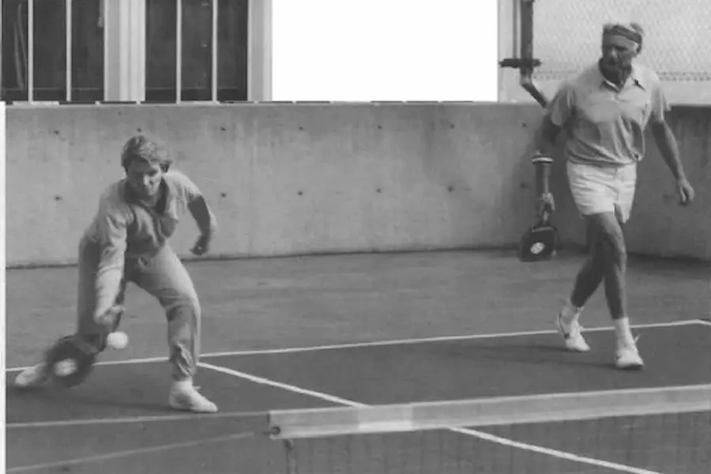
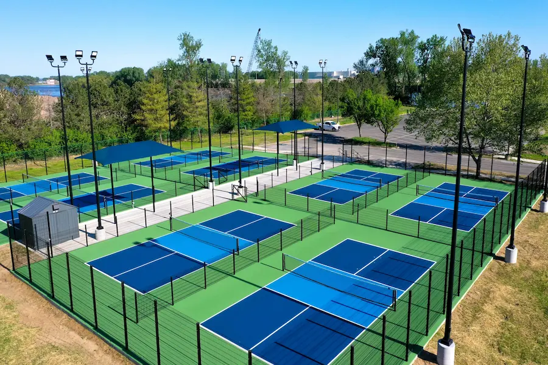

The History of Pickleball

How Pickleball Began
Pickleball was invented in 1965 on Bainbridge Island, Washington. The game was created by Joel Pritchard, Bill Bell, and Barney McCallum as a fun activity for their families. Using simple equipment and a badminton court, they developed a game that combined elements of tennis, badminton, and table tennis.
Where Did the Name Come From?
There are two popular stories about how pickleball got its name. One story claims the game was named after the Pritchard family's dog, Pickles, who would chase after the ball. Another explanation is that the name came from the term "pickle boat," which refers to a crew made up of leftover rowers from other teams.

Growth of the Sport
From a backyard pastime, pickleball has grown into one of the fastest-growing sports in the United States. Thousands of courts have been built across the country, and professional tournaments now attract top players from around the world.
The sport is popular because it is easy to learn, accessible for all ages, and provides both recreational and competitive opportunities.
Pickleball Timeline
- 1965: Pickleball is invented in Washington.
- 1972: A corporation is formed to protect and promote the sport.
- 1984: The first official rulebook is published.
- 2000s: Courts begin appearing throughout the United States.
- 2020s: Pickleball becomes one of America's fastest-growing sports.